Appartement Les Vagues des Sablettes
1 500 MAD/nuit
2 chambres • 1 salon • El Mansouria

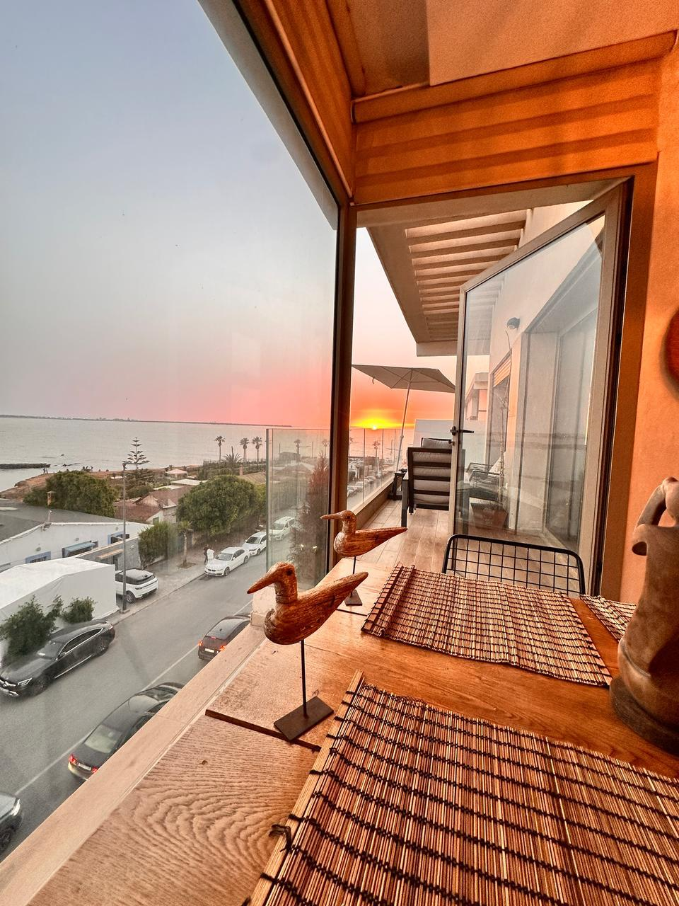
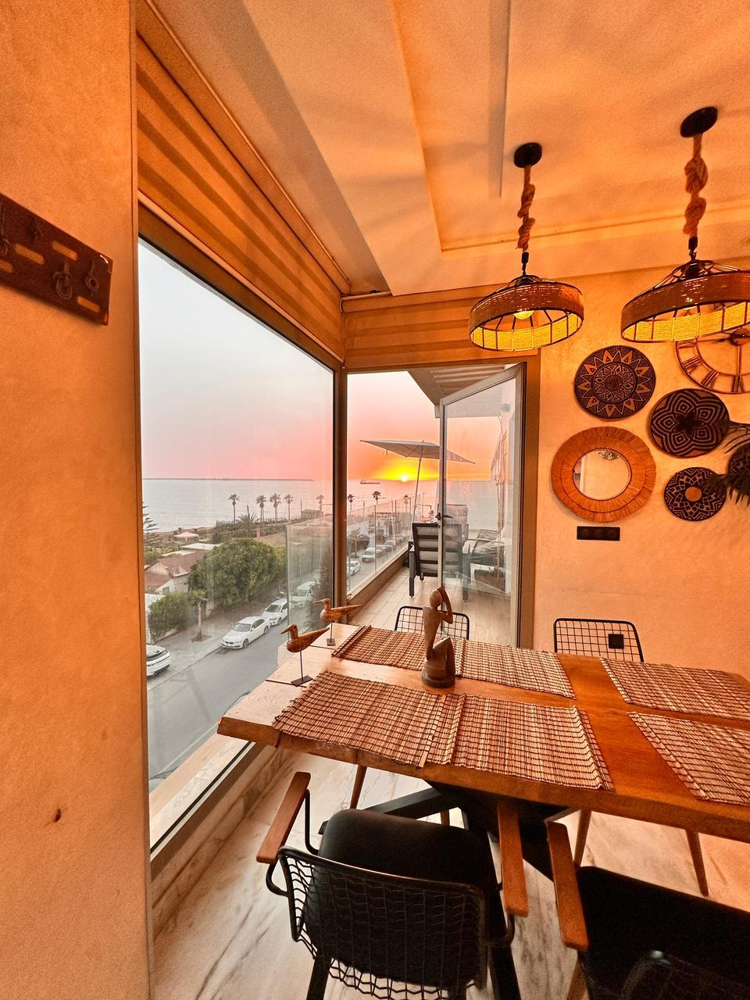
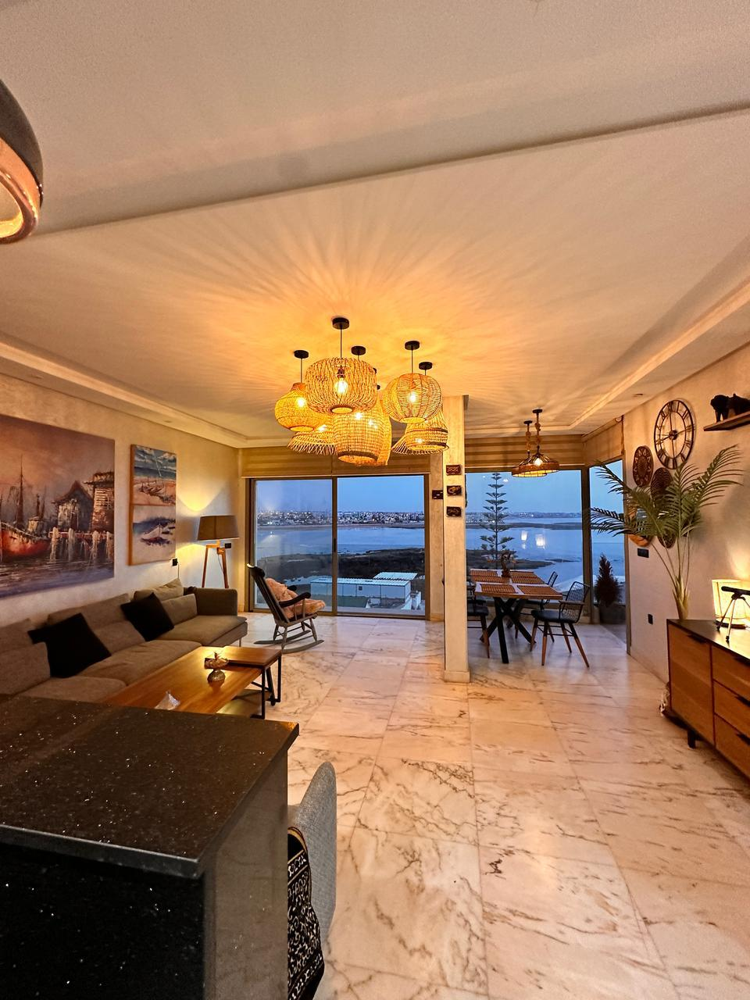
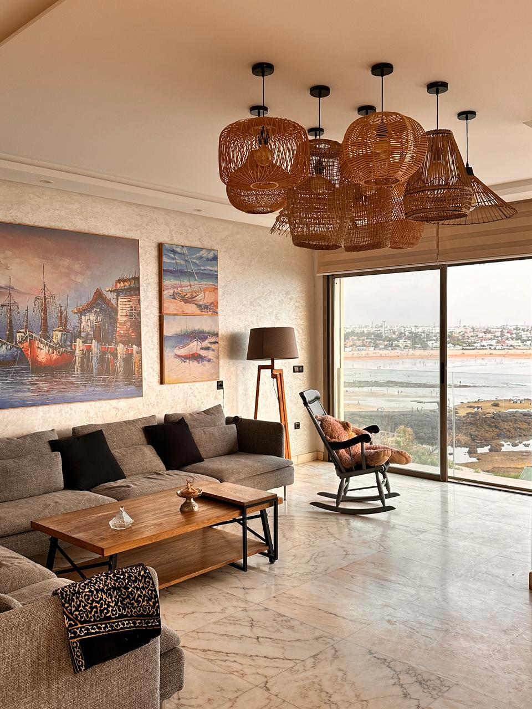
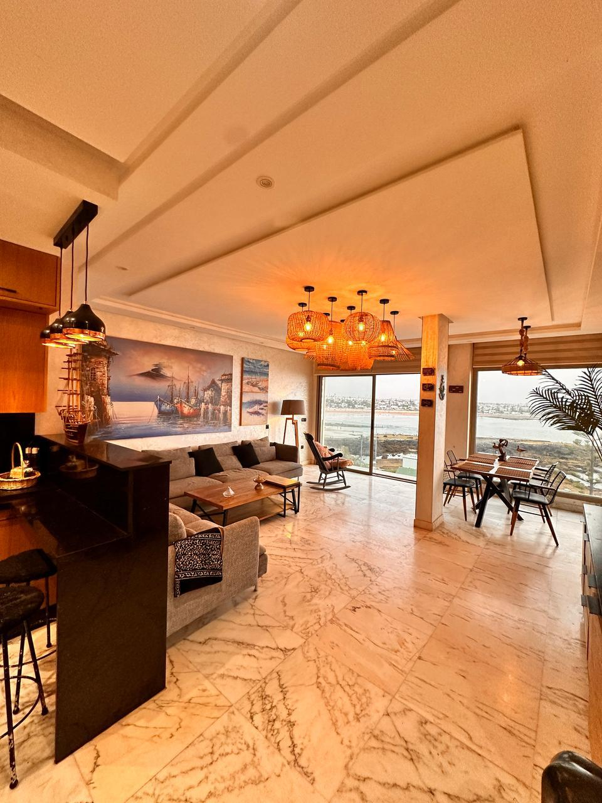
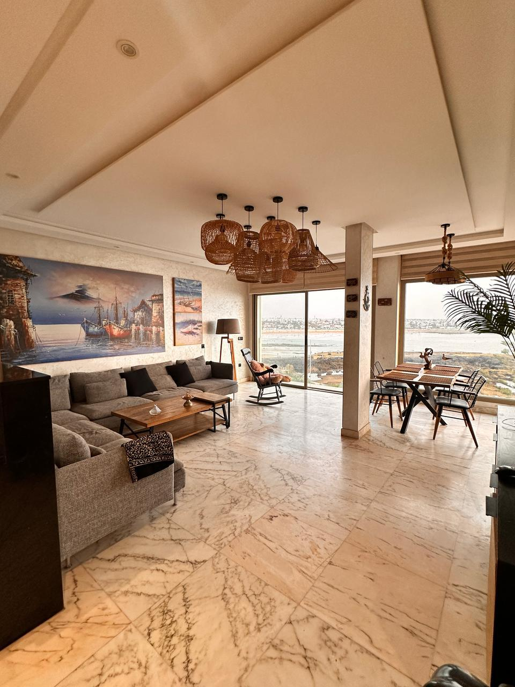
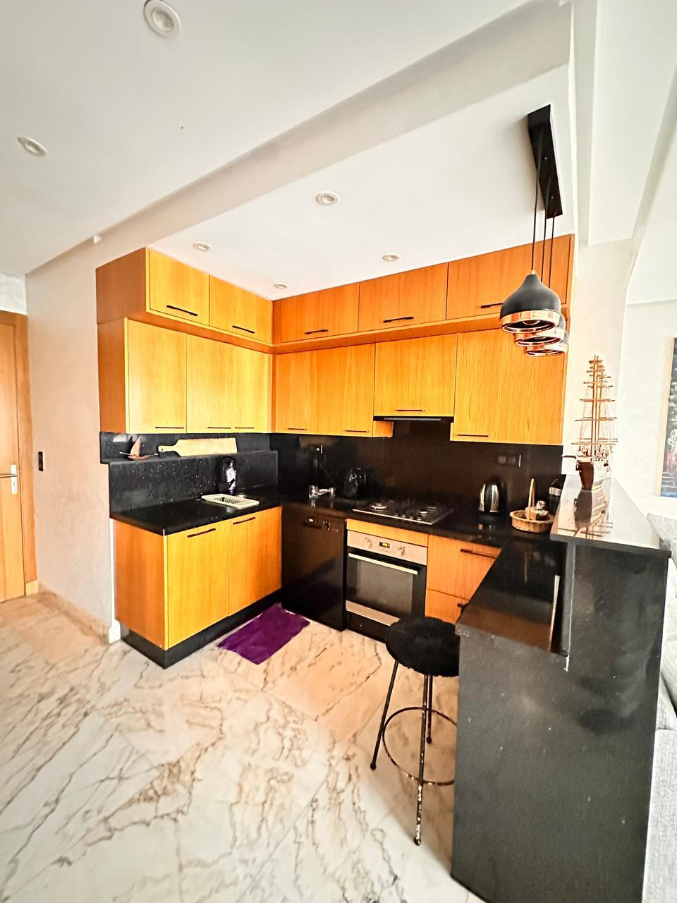
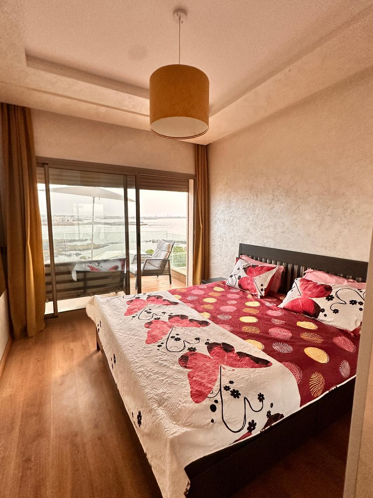
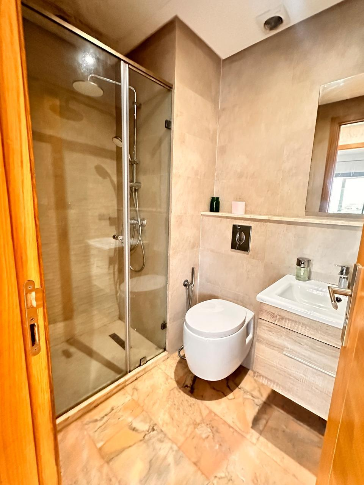
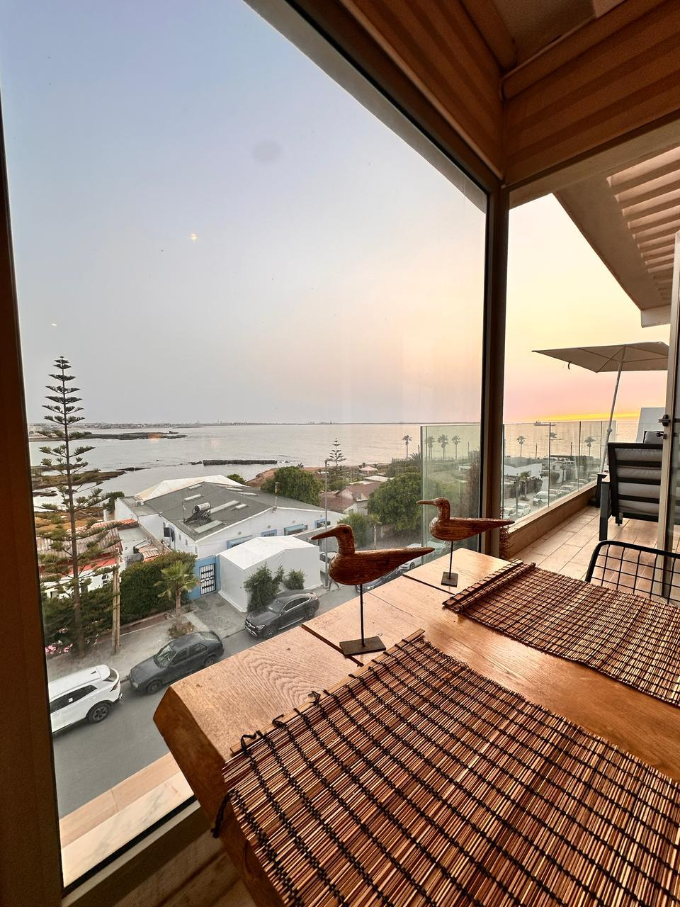
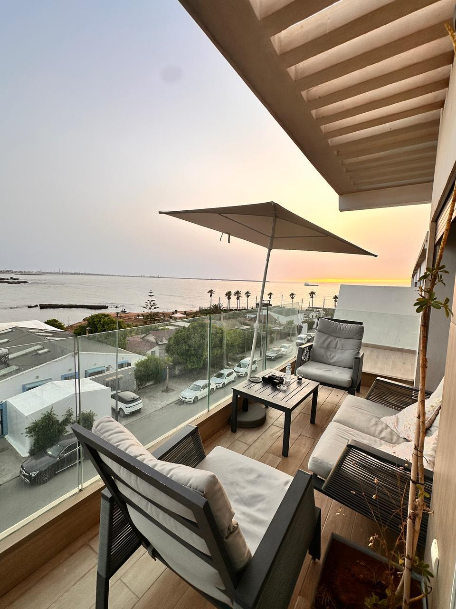
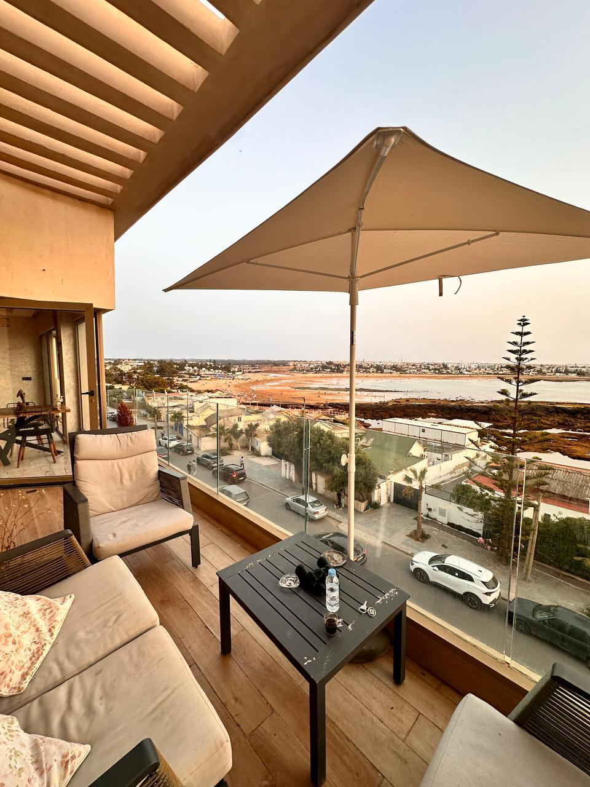
Description
Superbe appartement situé au 3ᵉ étage avec ascenseur dans la résidence sécurisée Les Vagues des Sablettes à El Mansouria. Ce bien lumineux offre une magnifique vue sur la mer depuis sa terrasse, idéale pour profiter pleinement de l’ambiance balnéaire. L’appartement se compose de 2 chambres, 2 salles de bain, un salon spacieux, une cuisine fonctionnelle et une terrasse avec vue mer. La résidence dispose d’une piscine et d’un accès direct à la plage, dans un environnement calme et agréable.
Caractéristiques
📍 Localisation : El Mansouria
🛏️ Chambres : 2
🛋️ Salon : 1
🚿 Salles de bain : 2
🚗 Parking : Oui
Contacter sur WhatsApp